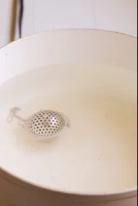
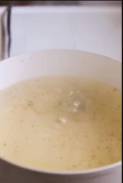
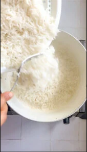
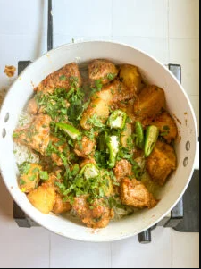
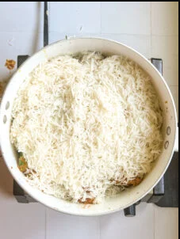
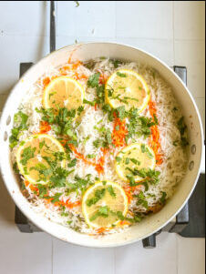
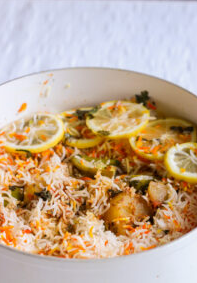

Spicy Chicken Biryani
Equipment
- 1 saute pan fir cooking the chicken
- 1 pot for the rice
Ingredient
Biryani Masala for Chicken
- 1 inch piece cinnamon stick
- 1 black cardamom
- 2.5 tsp red chili powder (cayene)
-
1/4 tsp turmeric powder
-
1/2 tbsp bhunna zeera (roasted cumin powder)
(can sub with cumin seeds)
- 1 tbsp bhunna dhania (roasted coriander powder)
(can sub with seeds, but try to dry roast first!)
- 1 tsp black peppercorns (sabut kaali mirch)
- 6 cloves
- 1 tsp salt
-
1/8 tsp powdered mace(can sub with a samll piece)
-
1/8 tsp powdered nutmeg(can cub with a small piece of nutmeg, but you'll have to break
it first!)
Chicken Masala
- 2 ibs bone in chicken (1 ib for boneless)
- 3 tbsp lemon juice (half a lemon)
-
1/4 cup youghurt
- 2 tbsp olive oil
- 1 tbsp green chili paste
- 1 tbsp garlic paste
- 1 tbsp ginger paste
- 3 diced tomatoes
- 2 potatoes cut into thick wedges
- Lemon juice OR 5-6 dried aloo bukharay
Rice
- 2.5 cups long grain basmati rice
- 2.5 tbsp salt (if using the excess water method)
- 1 tsp vinegar
- 1 tsp black pepper corns
- 1 tsp cumin seeds
- 1-2 green chilies
Layering Mix
-
1/3 cup chopped cilantro
-
1/4 cup chopped mint
- 3-5 green chilies cut long or in round
- 1 tsp food coloring dissolved in a 2 tbsp milk
- 1 tsp kewra or biryani essence
- slices of lemon and/or tomatoes
Chicken Masala
- Take all the ingredients listed in Biryani Masala and grind them to a powder.
A samll taste should
give
you a mix that's spicy and punchy!
- Marinate the chicken in the biryani masala, lemon juice, olive oil, youghurt,
and green chili paste
for
at least 30 minutes.
- Heat 1/4 cup of oil in a large saute pan and add your ginger and garlic pastes and
cook on medium high heat until they no longer smell raw - about a minute.
- Now add your diced tomatoes and cook, sauteing occasionally until the excess water dries and the oil
above the tomatoes.
- Stir in your marinated chicken, sautening until the colour changes.
-
Add your potatoes, aloo bukharay (if using), half a cup of water, cover the pot, and bring it to a
simmer, cooking for 25 minutes
or so or until the chicken is tender. Check on it halfway through to
see
if the masala is sticking (add more water if it is), but
otherwise there's no need to disturb it.
-
When the chicken is tender, turn up the heat to dry out any excess water, turn the stove off as soon as
it starts to stick a little and
the oil is above the masala. I like to add half my green masala
from the
layering (mint, cilantro, chilies)
now along with a squeeze of lemon juice
Rice
- Rinse your basmati rice until the water runs clear and soak it for at least 30 minutes. We will
start on the rice halfway through the chicken cooking time.
- 10 minutes into the chicken cooking bring a big pot of water to boil with the salt, vinegar and
flavorings. I like to put my whole pepper, cumin seeds and chilies in a strainer to pull it out if
you don't want whole spices in there.

- Once the water comes to a boil, drain and add your rice, cook for 6.5-7.5 minutes until the rice is
almost cooked through. It shouldn't be soft, but should break under slight pressure. Strain
immediatelt.

- Taste and adjust seasoning, remember this masala will flavour the rice too!
Layering
- Place half your rice at the bottom of the pot you used to cook it

- Spoon over your chicken masala, your remaining mint, cilantro and chilies.

- Cover with the remaining rice

- Top with a few drops of kewra or biryani essence, drizzle over your rice coloring, and add a few slices
of lemon and/or tomatoes, extra cilantro over top and cover with a tightly fitting lid. If your lid has
a steam vent then please block it.

- Let it sit at the lowest heat on your stovetop for 20-25 minutes and then carefully fluff and serve with
raita and kachumbar.

Go up